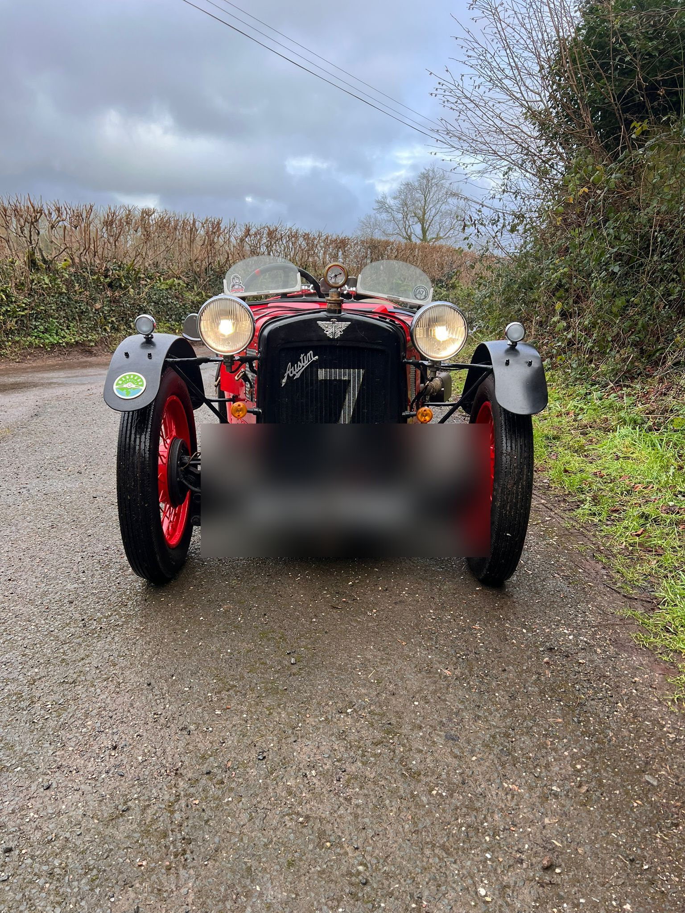
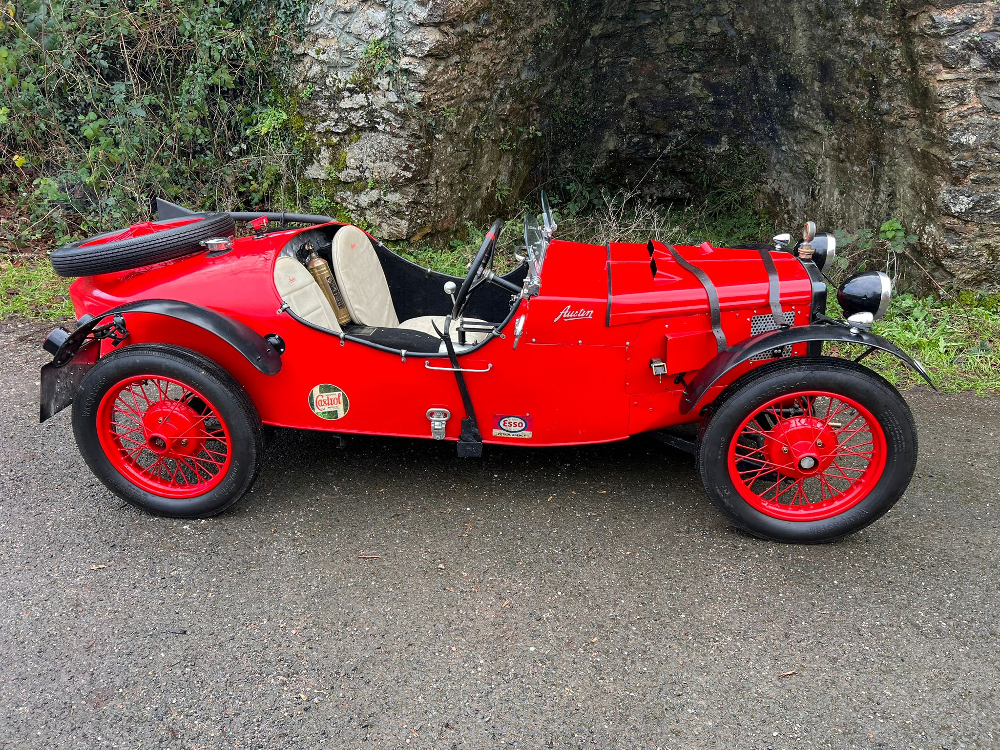
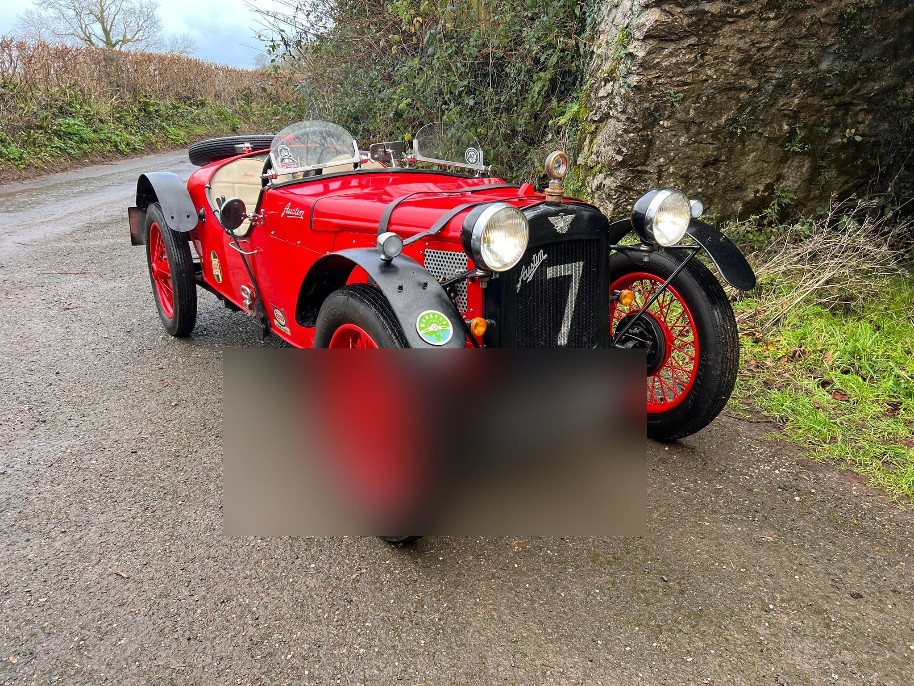
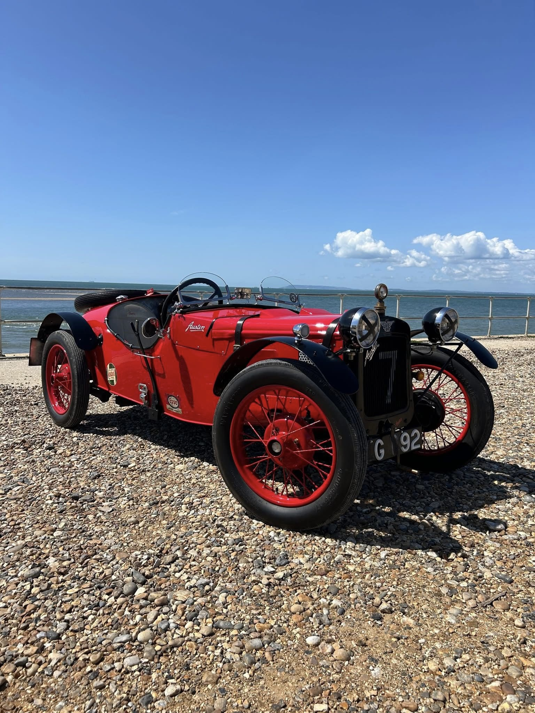

A handsome 2-seater boat-tail Austin 7 Special, built on the classic 750cc four-cylinder, four-speed manual platform that defined a generation of British light cars.
Finished in striking red, right-hand drive, and based in Middlesex, this Special has been built and maintained to a high standard. Available for hire on film, TV and similar productions in Middlesex and West London.
VSCC Eligibility Document No. 124920, issued 06/02/2026, certifying this Special's eligibility to compete in VSCC events.



Available for film, TV and similar productions in Middlesex and West London. For availability and rates, get in touch directly.